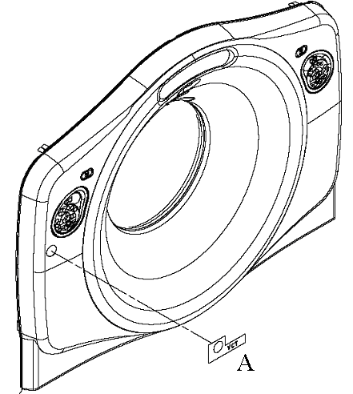
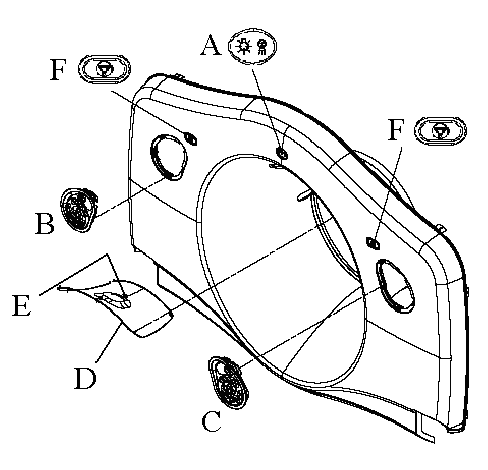

Operating Documentation
Direction 5193574-800, Rev# 22
LightSpeed 7.X Service Methods
Module Version 2.0, Version Date 2/10/15
Operating Documentation |
| Required Persons | Preliminary Reqs | Procedure | Finalization |
|---|---|---|---|
| 2 | Not Applicable | 3 hours | 5 mins |
This procedure explains how to remove and re-install gantry covers that are delivered without controls and displays (i.e., covers only) This procedure requires removing the gantry display panels, control panels, breathing light assembly, E-stop assembly, tilt sensors and microphone from the existing gantry covers and installing these onto the new covers. This procedure requires two (2) people.
| Last Updated On | January 28, 2015 |
| Item | Qty | Effectivity | Part# | Manufacturer | |
|---|---|---|---|---|---|
| Standard FE Tool Kit | 1 | - | - | - | |
None
None
| Item | Qty | Effectivity | Part# | Manufacturer | |
|---|---|---|---|---|---|
| Misty Grey Front Gantry Cover | 1 | - | 2397074 | - | |
| Mist Grey Rear Gantry Cover | 1 | - | 2397077 | - | |
| VCT Front Gantry Cover Label (not included with cover) | 1 | - | 5124429 | - | |
| ||||
| Muscle Strain | ||||
| Covers are large and heavy | ||||
| Use two (2) people to lift and change covers as described by this procedure. |
| NOTE: | Before beginning this procedure, please read the safety information in Equipment Service-Gantry. |
| Condition | Reference | Effectivity |
|---|---|---|
Only trained service personnel should service the GE CT scanner. | - | - |
The Gantry side, top and scan window procedures must have already been used. | - | - |
Table should be at it's lowest position to allow front cover to be moved away from gantry. | - | - |
Remove the current gantry side covers, top covers, scan window, and front cover.
Refer to Replacements > Gantry > Enclosure > (Cover Removal Procedures).
Turn OFF the Axial Drive, HVDC and 120 VAC switches on the Service Switch Panel.
Connect E-stop cable to terminal as shown in the cover removal procedure.
Remove the Gantry Display Panel from the front cover by removing the five (5) captive screws. Refer to Replacements > Gantry > Display > Display Assembly Replacement and Illustration 1.
Set Display Panel aside, NOT on the table.
Illustration 1: Front Cover Component Placement

| Illustration 1 Key | |
| A | Display Panel |
| B | Right Control Panel |
| C | Left Control Panel |
| D | Breathing Light Assembly |
| E | Tilt Sensor |
| F | E-stop assemblies (right and left) |
Remove the two Control Panels from the front cover by pressing on each ball stud for the panel until the panel is released. See Replacements > Gantry > Display > Operator Control Panel Replacement and Illustration 1 for reference.
Set Control Panels aside, NOT on the table.
Remove the Breathing Light Assembly from the front cover by removing the four (4) screws with a 3-mm hex wrench. See Replacements > Gantry > Display > Breathing Light Assembly Replacement and Illustration 1 for reference.
Set Breathing Light Assembly aside, NOT on the table.
Remove the Tilt Sensor from the front cover by removing the two (2) nuts with a 9/32-inch socket wrench. See Replacements > Gantry > Display > Gantry Cover Tilt Sensor Replacement and Illustration 1 for reference.
Set Tilt Sensor assembly aside, NOT on the table.
Remove the two (2) E-stop assemblies by removing the four (4) 4-mm hex screws for each assembly. Refer to Illustration 1.
Set E-stop assemblies aside, NOT on the table.
Tilt the front cover to its horizontal position over the top of the table.
Turn gantry power ON and move the table up to the gantry cover.
| NOTE: | Do not lift the gantry cover with the table. Lift the table just enough to contact the cover. |
Remove cover dollies from the front cover and allow cover to rest on the table.
With two (2) people, lift the cover off the table and set aside.
With two (2) people, place the new cover on the table and mount the cover dollies onto the new front cover.
Lower the table to its original position and turn gantry power OFF.
Rotate front cover to vertical and mount the Display Panel, Control Panels, Breathing Light Assembly, E-stop assemblies, and Tilt Sensor using the opposite method from which they were removed.
Install the new front cover on the gantry.
Refer to Replacements > Gantry > Enclosure > (Cover Removal Procedures) for front cover re-installation process.
Apply VCT Front Gantry Cover Label to gantry cover at the same position it is on the existing front cover. See Illustration 2 for reference.
Illustration 2: VCT Cover Label Placement

| Illustration 2 Key | |
| A | Placement of VCT Front Gantry Cover Label |
Remove the current gantry rear cover.
Refer to Replacements > Gantry > Enclosure > (Cover Removal Procedures) .
Remove the X-Ray Display Panel from the rear cover by removing the four (4) screw and washer combinations attaching the panel. Refer to Illustration 3
Set X-Ray Display Panel aside.
Illustration 3: Rear Cover Component Placement

| Illustration 3 Key | |
| A | X-Ray Display Panel |
| B | Left Control Panel |
| C | Right Control Panel |
| D | Tilt Sensor Panel |
| E | Breathing Light and microphone Position |
| F | E-stop assembly (right and left) |
Remove the two Control Panels from the rear cover by pressing on each ball stud for the panel until the panel is released. See Replacements > Gantry > Display > Operator Control Panel Replacement and Illustration 3 for reference.
Set Control Panels aside.
Remove the Tilt Sensor from the rear cover by removing the four (4) nuts with a 9/32-inch socket. See Replacements > Gantry > Display > Gantry Cover Tilt Sensor Replacementand Illustration 3 for reference.
Set Tilt Sensor assembly aside.
Remove the Breathing Light and Microphone assemblies with the Tilt Sensor panel. Refer to Illustration 3 to note position of these components.
Remove the two (2) E-stop assemblies by removing the four (4) 4-mm hex screws. Refer to Illustration 3.
Set the E-stop assemblies aside.
If desired, turn gantry power ON and move the table up to waist-height, for easier handling with the dollies.
| NOTE: | Remember to turn gantry power OFF after the covers are swapped and the table is put back down to its original position. |
With two (2) people, move the cover alongside table and tilt it over to lay on the table.
| NOTE: | Rear cover dollies do not tilt themselves; be careful when tilting the rear cover to horizontal position. |
Remove the dollies.
Using two (2) people, set the old cover aside and place the new cover on the table.
Attach dollies to the new cover.
With two (2) people, tilt the cover back up onto the dollies.
If table was moved up for cover swap, return to original position and turn gantry power OFF.
Mount the Display Panel, Control Panels, E-stop assemblies, and Tilt Sensor Panel using the opposite method from which they were removed.
With two (2) people, return the cover to the back of the gantry, and install the new rear cover on the gantry.
Refer to Replacements > Gantry > Enclosure > (Cover Removal Procedures) for rear cover re-installation process.
Turn ON 120 VAC switch from the Service Switch Panel.
When AC power is restored to the system, prior to enabling axial drive or HVDC, remember to rotate the gantry by hand to ensure there is no interference between covers and rotating components.
Turn ON Axial Drive and HVDC switches from the Service Switch Panel.
Remember when power is restored, observe Gantry Display, Gantry Control panels, and Breathing Lights during power on. Verify Power On Self Test (POST) completes normally and all cover indicators were illuminated during the POST. Verify that all Gantry control panels are functional with no ERR indicators. Also verify that the Gantry to Operator intercom is functional.
From the front cover control panel, press and hold the gantry forward tilt button and then press on the tilt sensor while still tilting gantry. Verify the gantry tilt stops.
Perform a [System Scanning Test] from the [Functional Checks] menu of the service manual to ensure system operation.
Verify all covers, especially side covers are properly secured.
Ensure there is no interference during all tilt range.